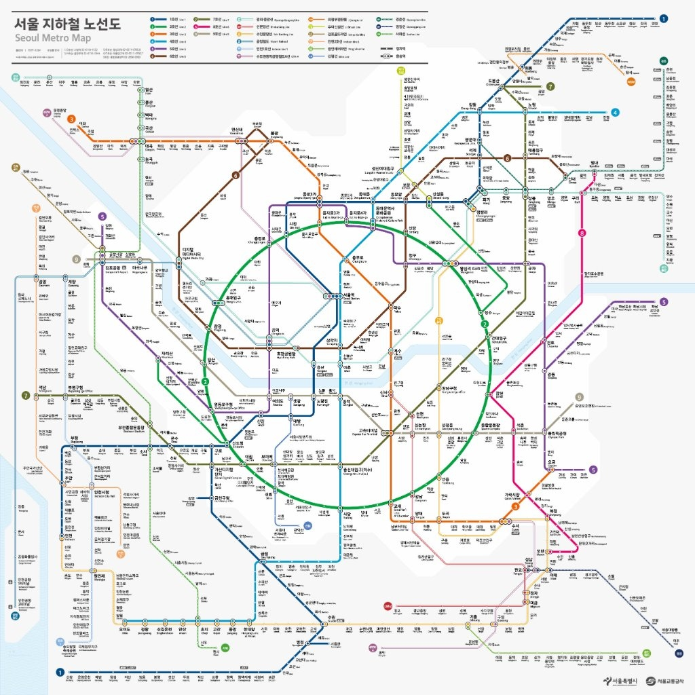

SEOUL METRO
마지막 열차 (The Missing Route)
쉬움
중간
어려움
초고난이도 (KTX/GTX)
🗺️ 공식 노선도 원본 전체 보기
💡 전체 수도권 철도망이 표시됩니다 · 인접 역을 클릭해 연결하세요 (휠 줌/드래그 지원)
🚇 전체 노선 범례 (21개 노선)
▼
한 강 (HAN RIVER)
+
−
⛶
💡
🎉
경로 복원 성공!
제공된 최소 단서만을 이용하여
수학적 유일해(Unique Solution)를 완벽히 찾아냈습니다!
다음 스테이지로 이동 ➔
🗺️ 서울 지하철 공식 노선도 원본 (클릭 시 확대/축소)
✕ 닫기
